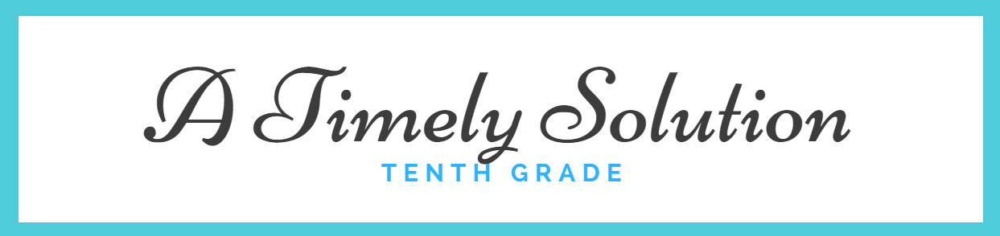

The purpose of the Coding the Past project was to connect the past to the present and let the unsung heros sing. Each class consisted of different deliverables but they all have the same general message. It launched in World History. We chose someone to shine light on. My choice was my dad. Studying Human Geography, we crafted a map based off of the main geography points covered in our discussion. After interviewing him, I told his story of being a "black" man in a 1960s America. This brings on the Humanities portion of the project. With the same idea in mind, I collected relating images to design a layered portrait of him. Putting words to my art piece, I drafted a reflection based around his portrait. The main topic in our interview was based around preconceptions he has made in his life. To that end, I wrote an essay about prejudices in every day life and how they affect our world. The final piece of my project was to construct this site from scratch. Through works of art, different forms of writing, and this very website, I present to you Coding the Past.
The purpose of the Timely Solution project was to reenact the World Fair that took place in the past. Each class consisted of different deliver but they all have the same general message. It launched in World History. We were assigned to choose a piece of technology that was highlighted during the Industrial Revolution. My group chose the sewing machine. Along with background research and a slide presentation explaining the importance of our piece, we had to create a 3D model. My group crafted our model from clay. In Yearbook, we were assigned to create two art pieces. The first art piece was based around a Primary Source from the Industrial Revolution. We crafted a poem based off of this. From this we made a collage. The second art piece was designed around a topic relating to social media. My topic was social media and race. From this, we designed a poem and a collage. All of these things mentioned can be seeen and explained on their resepective pages. To that end, the Timely Solution project taught me the importance of background research and how far technology has come. It has also taught me to understand the physical features of everything. Nothing is just because. Through works of art, different forms of writing, and this very website, I present to you a Timely Solution.